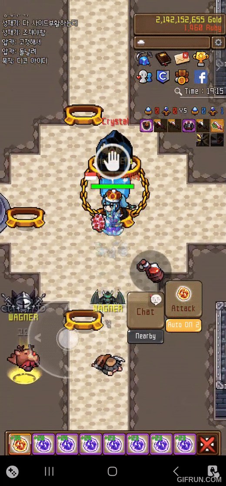
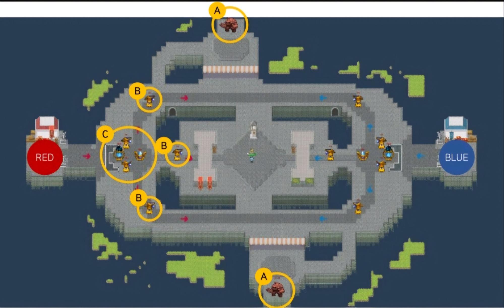
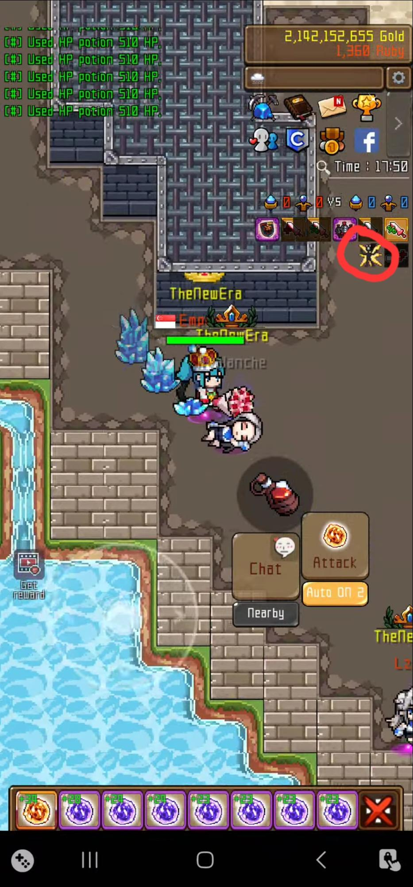
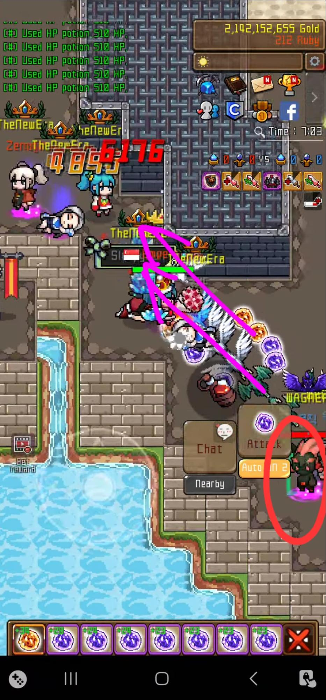
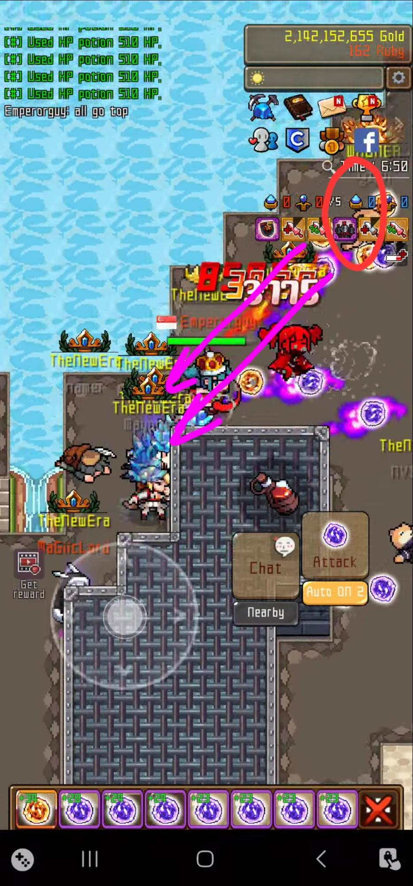

클랜 리더가 적의 클랜 타워를 모두 파괴한 후, 적 기지에 있는 크리스탈을 점령해야 해요.
리더는 약 20초간 크리스탈 위에서 가만히 각인을 해야 합니다.
각인 중 움직일 시, 각인이 초기화되니 각인중에는 클랜 마스터를 반드시 보호해야 합니다.


이미지에서 “A”로 표시된 2개의 골렘을 처치하면 3분간 10% 데미지 버프를 얻어요. 적의 피해 감소 효과에도 대항할 수 있어요.

골렘을 적보다 먼저 처치하고, 화면 옆 버프 상태를 잘 확인하세요.
위쪽 골렘은 처치후 3분 뒤 재생성 됩니다. (아래쪽 골렘은 재생성 되지 않습니다)
재생성 타이머는 버프 지속 시간과 같습니다. 만약 버프를 얻었다면, 버프가 끝나갈 때쯤 골렘 위치로 가서 다시 처치하세요.
리더가 크리스탈을 안전하게 점령할 수 있도록, 적이 방해하지 못하게 리스폰 트랩을 해야 해요.


적 기지에서 빨간색으로 표시된 위치에 서서 보라색 화살표 방향으로 공격하세요.
충분한 인원이 동시에 이 작업을 하면 적이 기지를 벗어나기 힘들게 돼요.
위쪽과 아래쪽 둘 다 막아야 하며, 각각 1~2명의 강한 플레이어가 트랩 수행자를 리스폰 지역에서 벗어난 인원들로부터 보호해야 해요.
트랩 수행자의 적정 인원은 대략 5명 정도 입니다.
리스폰 트랩은 모두가 동시에 살아 있고 제자리에 있어야 가능해요. 따라서 전체 인원이 함께 적 기지를 공격해야 해요.
골렘 2개를 점령하고, 적의 클랜 타워를 모두 파괴한 후, 리더가 공격 신호를 줘요.
신호가 오면 모두 기지에서 모여서 함께 전진하세요. 숫자에서 우위를 점해 적을 압도할 수 있어요. 적 기지에 도달하면 리스폰 트랩을 수행하세요.
대부분의 적이 루비를 다 썼거나 리스폰 지역에 갇히면, 리더가 크리스탈을 쉽게 점령할 수 있어요.
Q: 미라클 카드는 사용할 수 있나요?
A: 아니요, PVP에서는 사용할 수 없어요.
Q: PVP 장비가 없으면 어떻게 하나요?
A: 공격력 증가는 PVP에서 추가 피해를 주지 않기 때문에 치명타 관련 장비를 착용하세요. 장비가 아예 없어도 인원이 많을수록 도움이 됩니다.
Q: 스왑 매크로를 사용할 수 있나요?
A: 아니요, 성 전쟁에서는 인벤토리 사용이 제한돼요.
Q: 공성전은 얼마나 오래 지속되나요?
A: 시작 10분 전부터 입장 가능하며, 최대 30분간 진행돼요.